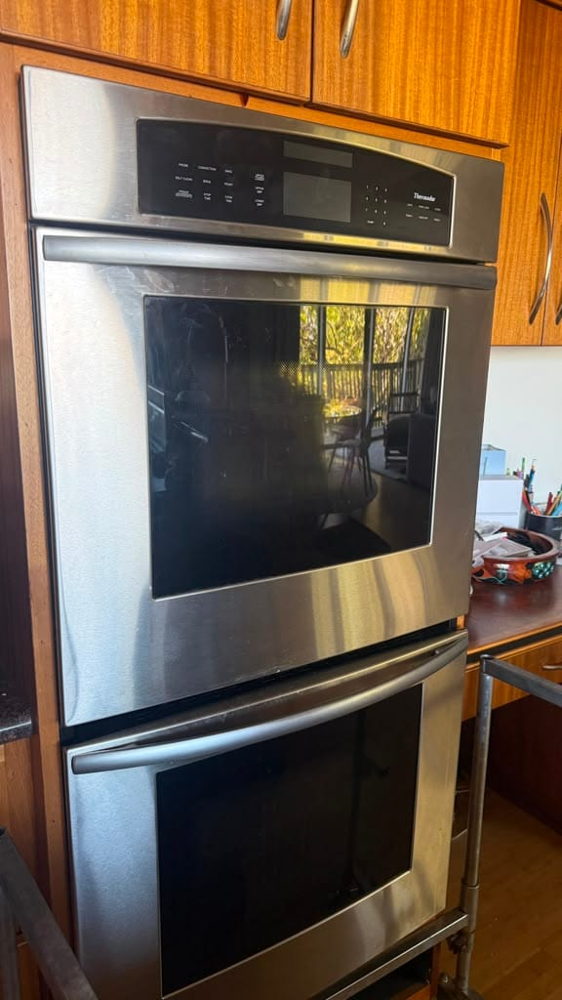

Luxury Appliance Repair in Pasadena
Viking, Wolf, Thermador, Sub-Zero, Miele, Dacor, DCS, and Bosch premium lines, in Craftsman kitchens and estate remodels across the city. We take premium brands only here, on a flat $99 diagnostic that is credited toward the repair. Our Los Angeles technician can often be out the same day.
Universal Appliances Repair Group Inc. provides luxury appliance repair in Pasadena, California, covering ZIP codes 91101, 91103, 91104, 91105, 91106, and 91107, including Bungalow Heaven, Madison Heights, Oak Knoll, Linda Vista, and the streets around Old Pasadena. In Pasadena we service premium brands only: Sub-Zero, Viking, Wolf, Miele, Thermador, Dacor, DCS, and the Bosch premium lines. Work covers professional gas and dual-fuel ranges, rangetops and cooktops, wall ovens, built-in refrigeration, panel-ready dishwashers, wine storage, and freezers, including units retrofitted into older cabinetry. We have a technician based in Los Angeles, so same-day appointments are available when that schedule is open, with next-available usually within a day or two. The diagnostic fee is a flat $99, credited toward the repair. Call (949) 629-5365 or book online at fixappliancesfast.com.
Built-In and Professional Work We Have Completed
Thermador, Viking, and DCS jobs where the appliance had to come out of a cabinet opening before anything could be diagnosed, which is the situation most Pasadena kitchens present. Every photo is our own work, labeled with the city it was actually taken in. Pasadena is a newer market for us, and local jobs will appear here as we complete them.



Pasadena Neighborhoods We Serve
We cover the residential Pasadena ZIP codes: 91101, 91103, 91104, 91105, 91106, and 91107. One thing worth clearing up before you book: address lookups often file 91108 under Pasadena, but that is San Marino, a separate city. What actually varies across Pasadena is the age of the kitchen and how much of the house was built around the appliance.
What Goes Wrong in an Older Pasadena Kitchen
A professional appliance retrofitted into a house built decades before it was designed brings its own set of faults, on top of everything that can go wrong with the appliance itself.
Premium Brands We Service in Pasadena
These are the brands we take in Pasadena. Open any one to see the failures we see most often on it, the parts involved, and how the repair usually goes.
Pasadena is premium-brand only. If your appliance is one of these, the diagnostic is a flat $99 credited toward the repair, and same-day is often open. With Bosch we take the premium built-in lines, Benchmark included, so if you're not sure which Bosch you have, read us the model number and we'll check it with you. If it's a Whirlpool, LG, or Samsung, we'll tell you on the phone rather than after a visit.
We service these brands and make no claim of factory authorization. If your appliance is still under manufacturer warranty, call the brand first, because authorized warranty work should cost you nothing.
What We Repair
What we work on in Pasadena kitchens. Open any one for the brands covered, the faults we see most often, and what the repair typically costs.
How It Works
Four steps, from the first call to a working appliance.
Modern Appliances in Houses That Predate Them
Most of what makes a Pasadena service call different happens before anyone touches the appliance. A professional range in Bungalow Heaven is very often sitting in an opening that was a plaster alcove for something much smaller, with a quarter inch of clearance on either side and an original hardwood or tile floor that will show every scrape. A built-in refrigerator in a Madison Heights remodel may be flush against a cabinet run that has settled a fraction of an inch out of square since it was installed. None of that is a fault, but all of it decides how the visit goes, and it is why we ask about the opening when you book rather than discovering it on arrival.
The second thing is the house behind the appliance. Older Pasadena homes sometimes deliver gas at a pressure that a modern high-output burner was not designed around, so a range that will not hold a low simmer can be perfectly healthy while the supply is the problem. Circuits laid out for a 1940s kitchen occasionally have a built-in refrigerator and a wall oven sharing a run that trips when both call for power. We diagnose the appliance properly, and when the cause is upstream we say so, because replacing a good spark module will not fix a supply issue and you should not pay for the part twice.
The third is simply the weather. Pasadena sits inland in the San Gabriel Valley and gets genuinely hot from July into October, and built-in refrigeration rejects heat into the room it stands in. A condenser that is half-blocked will hold temperature comfortably in spring and lose the fight in September, which is why refrigeration calls here cluster at the end of summer rather than the beginning. Our county-level page covers the premium service across all four cities: luxury appliance repair in Los Angeles.
Pasadena Repair Pricing
The diagnostic fee in Pasadena is a flat $99, the same rate we charge across Orange County and the rest of Los Angeles County, credited toward your repair if you proceed. It does not change with the brand or the age of the house. Most premium-brand repairs land between $250 and $900. Viking igniter and burner work usually runs $200 to $600, while sealed-system refrigeration work on a Sub-Zero built-in runs $1,200 to $2,500.
FAQ: Appliance Repair in Pasadena
Premium Appliance Trouble in Pasadena?
Viking, Wolf, Thermador, Sub-Zero, Miele, Dacor, DCS, and Bosch premium lines from Bungalow Heaven to Oak Knoll. Same-day when our Los Angeles technician has an opening. Flat $99 diagnostic credited toward your repair, 90-day warranty on every job.